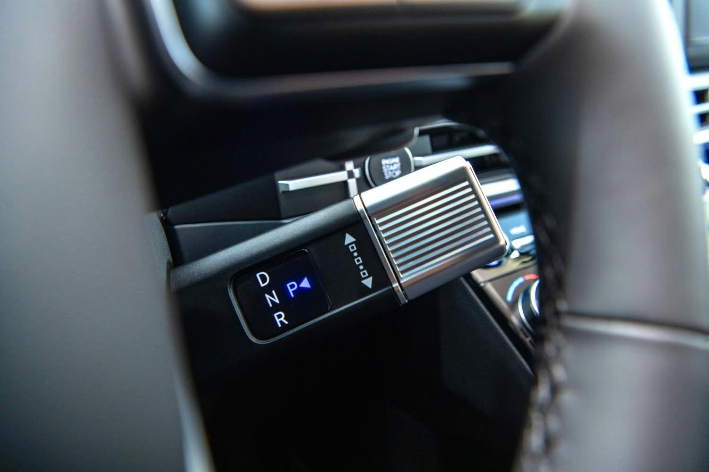

Ngày 18/09/2024 – Liên doanh giữa Tập đoàn Thành Công và Hyundai Motor chính thức giới thiệu mẫu SUV Santa Fe thế hệ hoàn toàn mới – Thế hệ thứ 5. Xe được phân phối với 5 phiên bản khác nhau và giá bán lẻ khuyến nghị từ 1.069 triệu đồng (đã bao gồm thuế VAT).
Trước đó, thế hệ thứ 4 của Santa Fe được giới thiệu vào tháng 1/2019 ngay lập tức thu nhận được sự ưa chuộng và đánh giá rất cao từ phía khách hàng. Tính đến hiện tại, thế hệ này đã đạt được doanh số cộng dồn trên 53.000 xe, trở thành mẫu xe dẫn đầu phân khúc D-SUV tại thị trường Việt Nam.
Sự thành công của những thế hệ trước đã tạo nên những áp lực không nhỏ cho một Hyundai Santa Fe hoàn toàn mới. Và vượt qua những kỳ vọng, tưởng tượng, All New Santa Fe đã chính thức được giới thiệu tại Mỹ vào tháng 11/2023 trước sự ngỡ ngàng giới truyền thông toàn cầu, tạo nên sự khao khát của bất cứ khách hàng nào. Và ngay sau khi ra mắt, Santa Fe thế hệ 5 đã giành được những giải thưởng quốc tế uy tín, như giải thưởng thiết kế Red Dot Award 2024 hay iF Design Award 2024.
“Santa Fe thế hệ hoàn toàn mới là một chiếc SUV tìm thấy sự cân bằng hoàn hảo giữa cuộc sống đô thị sôi động và những chuyến đi dã ngoại thú vị,… Với chiều dài cơ sở lớn hơn, nội thất rộng rãi và không gian cửa hậu rộng mở, Santa Fe là một chiếc SUV mạnh mẽ đem đến cho khách hàng những trải nghiệm cao cấp cùng sự linh hoạt hơn bao giờ hết “, SangYup Lee, Phó Chủ tịch điều hành và Giám đốc Trung tâm thiết kế toàn cầu của Hyundai Motor cho biết.
Để tiếp tục vị trí dẫn đầu, Liên doanh Ô tô Hyundai Thành Công đã sớm chính thức giới thiệu Santa Fe thế hệ thứ 5 sản xuất lắp ráp tại Việt Nam. Và với những thay đổi đột phá chưa từng có tiền lệ, Santa Fe hoàn toàn mới chắc chắn sẽ mang tới những trải nghiệm thực sự đặc biệt với khách hàng trong nước.
Santa Fe thế hệ mới mang phong cách thiết kế ngoại thất boxy khối hộp đậm chất SUV cổ điển, với cụm đèn chiếu sáng và nắp capo đẩy lên cao, tạo nên tổng thể khoẻ khoắn và thể thao. Điểm nhấn ở phần đầu xe là cụm đèn chiếu sáng Adaptive LED thích ứng tự động (AHB-LED), cùng cụm đèn chiếu sáng ban ngày tạo hình chữ H. Bên cạnh đó, mặt ca-lăng lấy cảm hứng từ logo Hyundai dạng phẳng 2D, làm nên tổng thể thiết kế táo bạo cá tính. Mặt ca-lăng của xe được trang bị tính năng AAF (Active Air Flap) mở/ đóng tự động thông minh tùy theo các chế độ vận hành nhằm tối ưu hệ số cản gió nhưng vẫn đảm bảo làm mát động cơ và hệ thống phanh. Cụ thể chỉ số cản gió thế hệ thứ 5 này là 0,298Cd (ngang với một chiếc sedan) còn thế hệ trước đó là 0,33Cd.
All New Santa Fe tiếp tục sử dụng hệ thống khung gầm toàn cầu N-Platform, mang tới một vóc dáng to lớn, mạnh mẽ và sang trọng hơn. Cụ thể, xe có kích thước Dài x Rộng x Cao lần lượt là 4.830 x 1.900 x 1.780 (mm) , kích thước này dài hơn 45mm, cao hơn 50mm so với thế hệ trước. Chiều dài cơ sở của xe cũng được tăng lên 50mm đạt con số 2.815mm, đem đến một không gian rộng rãi hơn cho 2 hàng ghế phía sau.
Santa Fe thế hệ hoàn toàn mới cũng trở nên cứng cáp, góc cạnh hơn nhờ phần vòm bánh xe lồi ra, vuông vức. Thân xe thiết kế dạng phẳng tối giản, phù hợp với một chiếc SUV kích thước lớp cũng như giúp tối ưu hoá không gian bên trong. Phần đuôi xe tiếp tục sử dụng công nghệ LED với tạo hình đèn hậu hình chữ H đồng bộ với cụm đèn trước, gia tăng khả năng nhận diện khi di chuyển. Phần đuôi xe có thiết kế phẳng hài hoà trong tổng thể thiết kế khối hộp của xe cũng như gia tăng tiện ích với cốp điện tự động.
All New Santa Fe có 3 tuỳ chọn lazang với kích thước 18, 20 và 21 inch với các thông số lốp tương ứng lần lượt 235/60 R18, 255/45 R20, 245/45 R21. Phiên bản Caligraphy được trang bị lazang đa chấu 21 inches tạo hình đẹp mắt, các phiên bản phiên bản còn lại sử dụng mâm 18 và 20 inch thiết kế khoẻ khắn với những nan lớn. Xe được trang bị giá nóc có khả năng tải đồ tối đa 100kg, cũng như tạo thêm vẻ việt dã khoẻ khoắn cho Santa Fe. Bên cạnh đó xe có móc tay ẩn ở cột chữ C giúp người sử dụng dễ dàng leo lên tháo dỡ, lắp đặt đồ trên nóc xe.
Cảm hứng thiết kế của không gian nội thất được mô phỏng theo hình chữ H khổng lồ với những đường thẳng ngang dọc đan xen mang tới sự sang trọng cho toàn bộ không gian. Nguyên lý thiết kế nội thất HMI (Human Machine Interface) được áp dụng và nâng lên một tầm cao mới giúp Santa Fe sở hữu không gian nội thất không những đẳng cấp, tiện nghi mà vẫn hoàn toàn trực quan dễ sử dụng nhất trong phân khúc.
Điểm nhấn của không gian hàng ghế trước là cụm màn hình thông tin và màn hình giải trí cảm ứng nối liền kích thước đều 12,3 inches. Cụm màn hình này hướng về phía người lái, giúp lái xe dễ dàng quan sát và sử dụng hơn khi đang lái xe. Màn hình giải trí hỗ trợ Android Auto/Apple Carplay không dây, bản đồ định vị dẫn đường vệ tinh tích hợp công nghệ W3W (What 3 Word) với độ chính xác tuyệt đối dành riêng cho thị trường Việt Nam. Tương tự phiên bản trước, màn hình hỗ trợ hiển thị Camera 360 SVM, hỗ trợ lái xe tốt hơn trong các tình huống đỗ xe hay di chuyển những con đường hẹp, đông đúc. Bên cạnh đó, hệ thống 12 loa Bose cùng ampli rời hỗ trợ giải mã âm thanh chất lượng cao đem đến trải nghiệm Hi-end ngay trên xe.
Bảng đồng hồ trung tâm là màn hình điện tử toàn phần Full Digital 12,3 inches. Tùy theo chế độ lái mà cụm đồng hồ này có thể hiển thị theo nhiều màu sắc khác nhau, đồng thời tích hợp tính năng giám sát điểm mù BVM giúp lái xe dễ dàng quan sát. Đặt phía trước cụm đồng hồ là hiển thị thông tin lên kính lái HUD (Head Up Display), hiển thị chi tiết các thông tin hữu ích như tốc độ hiện tại, giới hạn tốc độ, cảnh báo, dẫn đường…
Cần số của xe được tích hợp phía sau vô lăng dạng cần xoay, giúp giải phóng không gian và kết nối giữa ghế lái và ghế phụ. Cụm điều khiển điều hoà được sử dụng màn hình cảm ứng 6,6 inches trực quan kết hợp cùng 2 núm điều khiển giúp lái xe dễ dàng thao tác.
Các trang bị khác có thể kể đến như hệ thống ghế chỉnh điện và nhớ 2 vị trí ghế, hệ thống sấy vô lăng, sấy và thông gió hàng ghế trước, lẫy chuyển số vô lăng, gạt mưa tự động, kính trước chống mù và chống đọng nước tự động, phanh tay điện tử EPB, giữ phanh tự động Auto Hold… đem đến một không gian sang trọng và tiện ích trên khắp các vị trí.
All New Santa Fe được trang bị ghế ngồi bọc da cao cấp, riêng phiên bản Caligraphy sử dụng da Nappa. Santa Fe cũng là mẫu xe tiên phong trong phân khúc khi sử dụng nhiều vật liệu tái sinh, thân thiện môi trường và an toàn với người sử dụng ở các vị trí có bề mặt tiếp xúc mềm với hành khách. Xe được trang bị đèn trang trí Ambient Led đổi màu theo sở thích, tâm trạng của chủ xe.
Xe vẫn được trang bị các nút bấm điều chỉnh hàng ghế thứ 2 và thứ 3. Điều hòa trên xe là loại tự động 2 vùng độc lập cho hàng ghế trước, hàng ghế thứ 2 có khả năng điều chỉnh độc lập tốc độ gió. Hàng ghế thứ 3 được trang bị đường ống dẫn gió riêng giúp người ngồi có thể điều chỉnh được tốc độ gió mà không bị phụ thuộc vào hệ thống điều hòa chính. Phiên bản Caligraphy được trang bị hàng ghế thứ 2 độc lập chỉnh điện, gia tăng sự tiện nghi cao cấp cho hành khách cũng như chủ nhân chiếc xe.
All New Santa Fe được trang bị khay chứa đồ đa năng ở bệ tì tay có khả năng đóng mở lĩnh hoạt cho cả hàng ghế trên và dưới, giúp gia tăng sự nghi cho hành khách hàng. Xe được trang bị cửa sổ trời đôi độc lập hàng thứ nhất và hàng thứ 2 nhằm tối ưu hoá không gian cũng như mục đích sử dụng của 2 hàng ghế.
thế hệ này Santa Fe được trang bị gương chiếu hậu kĩ thuật số (trên phiên bản Caligraphy). Đây là trang bị tiên phong trong phân khúc. Hệ thống bao gồm 1 camera góc rộng độc lập và truyền thông tin hình ảnh phía sau xe với độ nét cao, độ trễ thấp đến gương chiếu hậu. Hệ thống giúp lái xe quan sát dễ dàng phía sau đặc biệt khi khoảng không hàng ghế 2 và 3 bị chắn. Trong trường hợp không muốn sử dụng tính năng này, người lái có thể chuyển sang gương dạng quang học thông thường thông qua 1 nút bấm trên gương.
Xe hỗ trợ sạc không dây đôi chuẩn Qi có công suất tối đa 15W. Cổng sạc nhanh trên xe theo chuẩn USB Type-C cho công suất tối đa 27W. Santa Fe là chiếc xe đầu tiên trong phân khúc trang bị hộc để tài liệu khử UV, giúp tiệu diệt đến hơn 99% vi khuẩn có hại, đảm bảo sức khoẻ của người sử dụng.
Santa Fe thế hệ 5 được trang bị thế hệ động cơ Smartstream hoàn toàn mới của Hyundai. Đây là thế hệ động cơ ứng dụng vật liệu mới, giúp giảm trọng lượng, hạ thấp trọng tâm, gia tăng độ bền bỉ và thân thiện mới môi trường.
Động cơ xăng Smartstream Theta III 2.5L (mã hiệu G4KN) sử dụng công nghệ phun xăng kép trực tiếp GDI cho công suất tối đa 194 mã lực tại 6.100 vòng/phút cùng Momen xoắn cực đại 246Nm tại 4.000 vòng/phút. Động cơ này hoạt động ở tỉ số nén 13:1, đem đến hiệu quả đốt cháy nhiên liệu và hiệu suất nhiệt cao hơn thế hệ động cơ cũ. Phiên bản sử dụng động cơ này đi cùng hộp số tự động 8 cấp giúp vận hành êm ái, mượt mà và tiết kiệm nhiên liệu.

Động cơ xăng Turbo 2.5L (mã hiệu G4KP) với công nghệ phun xăng kép trực tiếp GDI kết hợp cùng tăng áp cho công suất tối đa 281 mã lực tại 5.800 vòng/phút cùng Momen xoắn cực đại 422Nm tại 1.700 – 4.000 vòng/phút. Đi kèm với động cơ này là hộp số tự động ly hợp kép 8 cấp ướt (8DCT) hoàn toàn mới. Hộp số 8DCT ướt mới duy trì khả năng sang số nhanh đồng thời tăng khả năng chịu lực xoắn thêm 58% do được tối ưu hiệu quả làm mát bằng việc các lá ly hợp được ngâm trong dung dịch dầu làm mát chuyên dụng. Sự kết hợp này giúp Santa Fe Turbo có khả năng tăng tốc 0-100km/h trong vòng chưa đến 8 giây.
Tất cả các phiên bản đều được trang bị hệ thống Drive Mode với 4 chế độ: Eco – Comfort – Sport – Smart mang đến những trải nghiệm khác nhau cho mỗi khách hàng. Mẫu xe tiếp tục sử dụng hệ thống dẫn động 4 bánh thông minh HTRAC có thể điều chỉnh biến thiên tỉ số phân bổ lực kéo trên các bánh. Đồng thời, HTRAC trên Santa Fe được bổ sung 3 chế độ địa hình Terrain Mode: Snow (Tuyết), Sand (Cát), Mud (Bùn đất).
Hyundai Santa Fe thế hệ hoàn toàn mới tiếp tục được duy trì các công nghệ an toàn tiêu chuẩn:
- Hệ thống chống bó cứng phanh ABS
- Hệ thống hỗ trợ phanh khẩn cấp BA
- Hệ thống phân bổ lực phanh EBD
- Hệ thống kiểm soát lực kéo TCS
- Hệ thống ổn định chống trượt thân xe VSM
- Hệ thống cân bằng điện tử ESC
- Hệ thống hỗ trợ khởi hành ngang dốc HAC
- Hệ thống hỗ trợ xuống dốc DBC
- Hệ thống hỗ trợ phòng tránh va chạm khi lùi xe RCCA
- Hệ thống hỗ trợ phòng tránh va chạm điểm mù BCA
- Hệ thống thống cảnh báo va chạm khi ra khỏi xe SEW
- Hệ thống cảnh báo chống bỏ quên người ngồi hàng ghế sau ROA
- Hệ thống điều khiển hành trình thích ứng SCC
- Hệ thống cảnh báo vươt quá tốc độ giới hạn
- Hệ thống cảm biến áp suất lốp TPMS
- Hệ thống chống trộm Immobilizer
- Hệ thống an toàn 6 túi khí